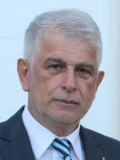

Invited Speakers

Ivana BANJAD PEČUR
Civil Engineering Faculty, Zagreb University, Croatia
Existing Bridges - Burden or Opportunity?
Rade HAJDIN
Faculty of Civil Engineering, University of Belgrade, Serbia

To be, or not to be ... demolished?
Goran MARKOVSKI
Faculty of Civil Engineering, “Ss. Cyril and Methodius” University, N. Macedonia
Avoiding Mistakes During Assessment, Design and Construction of Structural Repairs
Predrag POPOVIĆ
WJE - Wiss, Janney, Elstner Associates, Inc., USA

Monitoring System as a Part of Railway-Road Bridge Load Test
Vlastimir RADONJANIN
Faculty of Technical Sciences, University of Novi Sad, Serbia
IZIIS' Integrated Approach in Seismic Retrofitting of Structures, Historic Buildings and Monuments
Veronika SENDOVA
IZIIS, “Ss. Cyril and Methodius” University, N. Macedonia